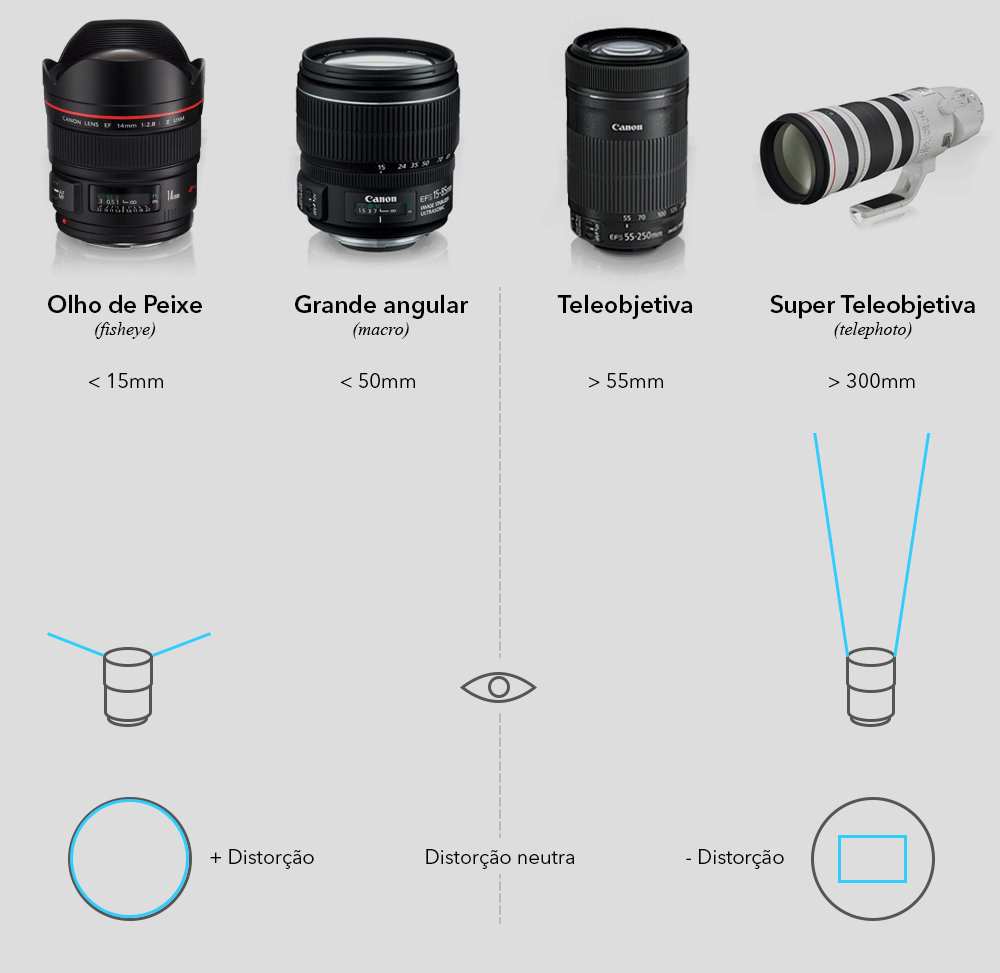
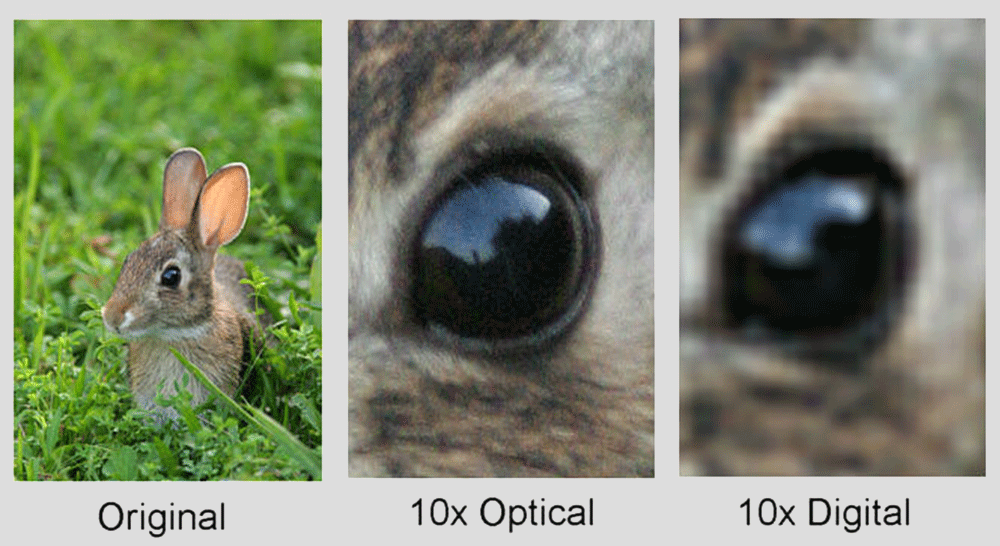

Controlar a Câmara
Objetiva - Zoom
O Zoom é a propriedade que nos permite aproximar e afastar o enquadramento do objetivo a fotografar.
O Zoom mede-se em mm. Sendo entre 50mm e 55mm o equivalente à visão humana. Devemos ter em conta que um valor superior ou inferior a cerca de 50mm causa distorções na imagem.
Estas distorções são efeitos naturais das lentes que se categorizam em vários grupos:
Objetiva - Foco
A focagem da objetiva apresenta várias propriedades que se devem ter em conta na hora de fotografar.
Distância focal é a propriedade que regula a zona da imagem que fica focada. Esta propriedade está altamente relacionada com a abertura do diafragma.

Abertura do diafragma é a propriedade que regula básicamente a quantidade de focagem aplicada na zona focada. A abertura do diafragma é medida em f stops em que uma abertura maior é expressada por um número menor.
Bokeh é uma propriedade que difere consoante a objetiva e refere-se ao tipo/qualidade de desfoque aplicado, mais precisamente à forma do desfoque aplicado.
Anatomia da Objetiva
Uma objetiva é composta por várias lentes que possuem distintas funções.
Com a entrada de luz na objetiva, são originados certos fenómenos óticos como vignetting e aberração cromática.
É para corrigir estes efeitos que existem várias lentes nas objetivas. Mas com o uso de certas lentes, são originados outros fenómenos que obrigam ao uso de lentes específicas posicionadas corretamente para os corrigir. Neste aspeto as objetivas de uma gama mais baixa não possuem lentes de correção para todos os fenómenos óticos que se possam verificar.
É possível corrigir a maioria de estes fenómenos e distorções através de pós produção em aplicações de tratamento de imagem como o Photoshop.
Optical Zoom VS Digital Zoom
Tal como se observou anteriormente, as objetivas das câmaras DSLR possuem várias lentes que permitem aumentar e reduzir o campo de visão. Mas no caso de câmaras compactas ou telemóveis não existe uma objetiva que permita realizar semelhante função.
É aqui que entra em jogo o zoom digital. O zoom digital possui um método digital de ampliação da imagem pelo que na realidade se realiza um processo de pós produção, ou seja, a imágem é ampliada depois de ser capturada e não durante o processo.
Em termos práticos isto significa que para realizar uma ampliação digital de qualquer tipo é necessário um processo de criação (ou eliminação no caso de reduções) de pixels.
Veja-se em baixo um exemplo de ampliação ótica e digital:
